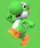

Yoshi
Mario peut désormais voyager avec Yoshi, qui possède des capacités spéciales pour explorer les galaxies.
UNE NOUVELLE AVENTURE SPATIALE
Après le succès de Super Mario Galaxy, Mario reprend son voyage dans une nouvelle aventure intergalactique : Super Mario Galaxy 2.

Sorti en 2010 sur Wii, Super Mario Galaxy 2 est la suite directe du premier jeu. Mario doit une nouvelle fois parcourir l'espace pour sauver la Princesse Peach et affronter Bowser.
Le jeu conserve le principe des planètes et de la gravité, tout en proposant de nouveaux mondes, de nouveaux défis et davantage de surprises.
Une suite qui enrichit les idées du premier jeu.

Mario peut désormais voyager avec Yoshi, qui possède des capacités spéciales pour explorer les galaxies.
De nombreux mondes inédits attendent Mario, avec des environnements et des défis variés.
Le jeu propose de nouvelles transformations, des niveaux plus variés et des étoiles à découvrir.
Super Mario Galaxy 2 reprend la magie du premier épisode tout en proposant une aventure encore plus riche. Une nouvelle occasion pour Mario de repousser les limites de l'exploration spatiale !